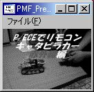
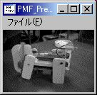
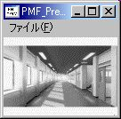
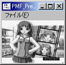
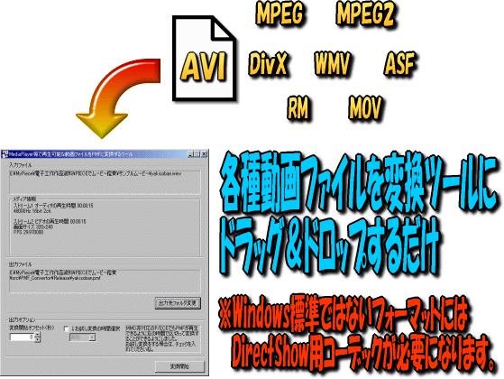
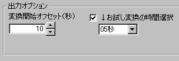

| 更新履歴 |
| 2005/02/26 | (P)Ver.1.00 (W)Ver.1.0 |
初公開 |
| 2005/03/06 | (P)Ver.1.01 (W)Ver.1.1 |
P/ECE側プレイヤーのシステムメニュー復帰後にリスト画面が乱れる不具合を修正しました。 この不具合は、初公開直前のマニュアル書いてる時に気付いて、誰かに指摘されるまで放置しておこうと思っていましたが、早速nsawaさんにご指摘頂いたので、直しました（＾＾； PMF_Convertorにお試し変換機能を含む、出力オプションを追加しました。これで、5秒とかの短い時間で変換する範囲が指定できます。 MMC非改造P/ECE向けの機能ですので、是非ご活用ください。 |
| 2005/03/20 | (P)Ver.1.02 (W)Ver.1.1 |
PMFプレイヤーのMMCライブラリを512MB以上1GB以内のメモリカードに対応させました。恐らく2GBのSDカードにも対応しますが、検証できないので、1GBまでとします。 ※UPする時間が取れなかったため、実際に公開したのは03/30です。（＾＾； 実は、mmcFileReadSctを使っていないアプリ（MP3プレイヤーとか、nsawaさんのMMC/SDカードリーダーライターとか）は、すでに1GBまで対応してたことが判明（汗） |
| 2005/04/03 | (P)Ver.1.03 (W)Ver.1.1 |
PMFプレイヤーをMMCカーネルVer.1.27に対応させました。 また、MMCライブラリのソースをMMCカーネルのものと共通化しました。 |
| 2005/04/09 | (P)Ver.1.03 (W)Ver.1.2 |
PMF_Convertor.exeがWin98系で起動できない(スタックエラーになる)不具合を修正しました。 |
| 2005/05/04 | (P)Ver.1.04 (W)Ver.1.2 |
MMCライブラリをMMC版MP3プレイヤーとMMC対応カーネルVer.1.29bとこのPMFプレイヤーでソースを統合しました。 これにより、MMC対応カーネルやMMC版MP3プレイヤーでの不具合への対応もPMFプレイヤーに反映されました。 機能的にはほとんど変化はありませんし、Windows側の一発変換ツールも前回Ver.UP時と同じモノです（＾＾； 2005/05/05 追記 この問題は次回Ver.UPで対応する予定です。あらかじめ御了承ください。 2005/05/07 追記 Ver.1.05でこの不具合は修正されました。 |
| 2005/05/07 | (P)Ver.1.05 (W)Ver.1.2 |
PMFプレイヤーのMMCライブラリを更新しました。 扱う最大ファイルサイズがカード容量を超える場合に、最大ファイルサイズをカード容量のサイズに切り詰めるように修正しました。 これにより、64MBのカードで50MB以上のファイルが扱えなかった不具合が修正されました。 |
| 2005/06/14 | (P)Ver.1.10 (W)Ver.1.3 |
ついに再生中の早送り・巻き戻しができるようになりました（＾o＾ 再生中に十字PADの左右で、約15秒単位ずつ自由に再生位置を移動できます。 この機能を利用するには今回同時にリリースしたPMF_Convertor Ver.1.3以降でPMF2形式のPMFファイルを作ってください。 従来のコンバータで出力したPMF1形式のPMFファイルではシーク機能が利用できませんので、誠にお手数をお掛け致しますが、再度変換しなおしてください。 |
| 2005/07/09 | (P)Ver.1.11 (W)Ver.1.4 |
MMCライブラリのVer.UP(PMFプレイヤー専用のUpdate)
により、扱える最大ファイルサイズが大容量(128MB以上)
のカードに限り、カードのほぼ最大容量までになりました。これにより、1GBのカードだと1ファイル最大約4.5時間（960ＭＢ）もの長時間再生が可能に（なったと思います（＾＾；
さすがにまだ4.5時間は未確認。でも、512ＭＢのminiSDで風の谷のナウシカは見れたよ（嬉）)。 あと、MMCライブラリのmmcFileReadSctとmmcFilreReadMMCSctでファイルサイズを超えてアクセスした時のチェックが上手く動いていなかった不具合も修正しました。これにより、MMC対応カーネルやMMC対応MP3プレイヤーも更新対象になります。 今回はPMF_Convertor側でも、画像変換時に余計にデータを書き込んでしまっていた不具合を修正し、機能自体はまったく変わりはありませんが、Ver.1.4となりました。 |
| 2005/08/08 | (P)Ver.1.12 (W)Ver.1.5 |
今回のVer.UP（っていうかバグフィックス）の目玉は、PMF_Convertorでグレイスケール変換時の色の取り方が間違っていたのを修正した点です。 情けない話ですが、グレイスケールに見えて実は今まで全然グレイスケールじゃなかったんです（汗 で、今回の修正で正しいグレイスケールになり、輝度も正しく出るようになったので、後述する追加出力オプションの「自動コントラスト調整」と「ガンマ補正(0.85固定)」はあまり意味がなくなってしまいました。 ですが、せっかく作ったんだし、動画によっては効果が出る場合もあるので、そのまま残しておくことにします。 というわけで、今回は上記の不具合修正のほかに、PMF変換時に画像にちょっとした輝度変換を加える出力オプションを追加しました。 追加されたオプションは「自動コントラスト調整」と「ガンマ補正(0.85固定)」の2種類です。この2つのオプションの効果はこちらの日記を参照してください。 このほか、今回のVer.からPMF_Convertorに変換中の進行状況を示すプログレスバーが表示されるようになりました（＾＾ あと、PMFプレイヤーの方でPMF2形式の動画データ終端チェックが間違っていた不具合を修正したのと、この修正に伴ないオマケのPMF_Previewerでも同様の不具合を修正しました。これにより、PMF_PreviewerでPMF2形式のファイルを再生した場合に、最後の部分で強制終了してしまう不具合も解消されました。 |
| こんなことできます |
|
| 早速ですが、バイナリ＆ソースの公開です（＾＾； |
| ・バイナリ New!! 2005/08/08 pmf_bin_2005_0808.zip(1.43MB) ・ソース New!! 2005/08/08 pmf_src_2005_0808.zip(1.75MB) ※2019/04/02 長らくリンク切れで申し訳ございませんでした。リンク復活しました。 使い方は付属のテキストファイルをご参照ください。 PMF_Convertor Ver1.1からお試し変換機能が付きましたので、非MMC改造の方も是非体験してみてください。 ～お知らせ～ PMFプレイヤーVer.1.05以上、PMF_Convertor Ver.1.3以上では、シーク（早送り・巻き戻し）が可能なPMF2形式に対応しています。 従来のPMF1形式のPMFファイルにつきましては、再生は可能ですがシークはできませんので、誠にお手数ですがシーク機能を希望する方は再変換をお願い致しますm(_ _)m ＝簡単な使い方の説明＝ Windows側アプリは両方とも基本的にファイルのドラッグ＆ドロップで動きます。 P/ECE側アプリも、ファイルを選んでAボタンで再生。SELECTボタンで戻る・終了します。 詳しい解説に関しては、また時間ができたときにおいおいやって行こうと思います。 とりあえずの感想 |
| 見た目はこんな感じ |
| ・キャタピラカーをP/ECEで動かしている動画（29秒）  PMFファイル（1.54MB） ・音に反応して動く象さん（19秒）  PMFファイル（1.10MB） ・おまけ（Routes(C)Leaf/AQUAPLUSのデモ動画の一部）   これらの画像は確認用おまけプレビューツールであるPMF_Previewer.exeのスクリーンショットです。 |
| ドラッグ＆ドロップで一発変換！ PMF Convertor |
 変換ツールの使い方はいたって簡単です。 「出力フォルダ変更」ボタンで、PMFファイルの出力先を選択したら、あとは動画ファイルをドラッグ&ドロップして、「変換開始」ボタンを押すだけ。 すべて全自動で、P/ECEの画面に合ったサイズと色に変換してくれます（＾＾ ファイルをドロップしても、変換開始ボタンが押せなくなっている場合は、その動画ファイルのフォーマットに対応したDirectShowフィルタが無い可能性があります。 DirectShowフィルタやコーデックに関しては、以下の検索結果などをご参照ください。 コーデック DirectShowフィルタ ●非MMC改造ユーザに朗報です！● PMF ConvertorのVer.1.1から出力オプションに、「お試し変換」機能が追加されました。 これは、ムービーの好きな位置から、5秒や10秒などの短い時間で切り出してPMFに変換するというもので、MMCに接続していないP/ECEでPMFを再生するのにもってこいの機能です。 出力オプションの図  お試し変換機能を使うためには、出力オプションの「↓お試し変換の時間選択」の左にあるチェックボックスにチェックを入れ、下のコンボボックスで、お好みの秒数を選択します。 ちなみに、無印P/ECEではだいたい5秒が限界のようです（汗 変換開始オフセットは、ムービーの最初から指定の秒数進んだところを変換開始位置とするための設定です。 これで、好きな場所から数秒間をPMFに変換することができます。 MMC改造していないP/ECE（無印・2MB改造とも）でPMFを再生するには、ここからバイナリまたはソースをダウンロードして、その中にある「内蔵フラッシュ対応版pmf_play」をご使用ください。 内蔵フラッシュ対応版pmf_playでもPMFの品質は変わりませんので、ご安心下さい（＾＾ |
| 番外 |
| ヅラChuさんの2005年夏コミ本「Re[2]:P/ECE」の連動企画として、こんなページを用意してみました。 PS2版 ToHeart２のOP動画をPMFに変換しよう！ 参考：ヅラChuさんの記事 |
なにか判らないことがありましたら、遠慮なくまどかまで御連絡ください。